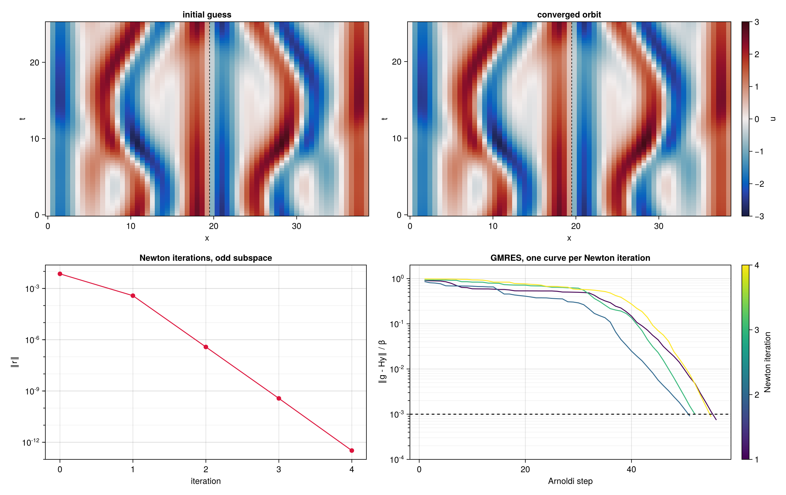

Kuramoto–Sivashinsky in the odd subspace
On domains larger than $L = 22$ the Kuramoto–Sivashinsky equation is often studied in the subspace of odd solutions, $u(-x) = -u(x)$, where the dynamics is still chaotic but the continuous translation symmetry is absent: Lan & Cvitanović (2008) computed periodic orbits there on $L = 38.5$, and Lasagna (2018) large sets of them on $L = 39$. This page searches for a periodic orbit in the odd subspace on $L = 39$ with the keyword project of System, and explains why the search then needs no drift speed. The script is examples/kuramoto_sivashinsky/symmetric.jl; the model is that of the Kuramoto–Sivashinsky equation page.
The odd subspace
The equation is equivariant under the reflection $S u(x) = -u(-x)$: if $u$ is a solution, so is $S u$. The fields fixed by it, $S u = u$, are the odd fields, and they form a subspace $V$ that the dynamics never leaves: if $u$ is odd, so are $u\,\partial_x u$, $\partial_x^2 u$ and $\partial_x^4 u$, hence the right-hand side. Odd fields are sine series, with purely imaginary coefficients $\hat u_k$, and have zero mean, so the pinning of the mean is inactive.
On the grid of $N_x = 65$ points in space and $N_s = 73$ in rescaled time used below, an odd field is determined by $(N_x - 1)/2 = 32$ values per time level: the search in the odd subspace has $32 \times 73 + 1 = 2\,337$ real unknowns, the field and the log-frequency, against $65 \times 73 + 2 = 4\,747$ for a relative periodic orbit in the full space.
The complete example
The projection on the odd fields, $P u(x) = \big(u(x) - u(-x)\big)/2$, is computed on the grid, which the reflection maps onto itself: the point $x_j = (j - 1) L/N_x$ goes to the point $j' = N_x - j + 2$, modulo $N_x$, and $x = 0$ is fixed. It is the function odd! of ks.jl:
function odd!(u::KSField)
Nx = u.g.Nx
for l in axes(u.data, 2), j in 1:(Nx + 1) ÷ 2
j′ = mod(Nx - j + 1, Nx) + 1
a = u.data[j, l]
b = u.data[j′, l]
u.data[j, l] = (a - b) / 2
u.data[j′, l] = (b - a) / 2
end
return u
endThe whole search, from the trajectory to the converged orbit, is then:
using ReSolverV2
include("examples/kuramoto_sivashinsky/ks.jl")
L = 39
Δt = 0.25
# ---- a chaotic trajectory in the odd subspace, from a random sine series ----
gt = KSGrid(L, 65, 97)
xs = xpoints(gt)
u₀ = sum(0.1 * randn() .* sin.(2π * k .* xs ./ L) for k in 1:6)
U = integrate(u₀, gt, 0.05, 4000; every=4000, odd=true) # transient
U = integrate(U[:, end], gt, 0.05, 16000; every=5, odd=true) # 800 time units
# ---- initial guess: its best near-recurrence with period in [20, 30], without shift ----
e, i, m, _ = recurrence(U, gt, Δt, (20, 30); drift=false)
g = KSGrid(L, 65, 73)
x = initial_orbit(U, g, Δt, i, m, 0.0; drift=false) # Orbit(a, [log ω])
# ---- the system on the odd subspace: no drift directions, the projection odd! ----
F = System(KSNonlinear(g), KSLinearised(g), KSLinearised(g; adjoint=true), dds!, x;
linearise!, B=KSPreconditioner(x; kind=:jacobian), project=odd!)
solve!(x, F, NewtonHookstep(maxiter=30, krylov_dim=200, Δ=0.1, Δmax=10, tol=1e-10))Compared with the search on $L = 22$ there are three differences: the orbit carries the log-frequency only, p = [log ω]; ddi is not given, so it is empty, ddi=(); and project=odd! is passed. The operators, the derivative dds! and the preconditioner are those of the full space, unchanged. The trajectory is integrated with odd=true, which removes the cosine part of the Fourier coefficients at every time step: the odd subspace is unstable in the full space, and rounding errors would otherwise grow, as $e^{0.09 t}$ approximately, until the trajectory leaves it after a few hundred time units.
Why no drift speed is needed
In the full space. An odd orbit, seen in the full space, is a relative periodic orbit with zero drift: the equation is equivariant under translations, so every translated copy $u(x + \ell, s)$ is an orbit too. Differentiating with respect to $\ell$ shows that $\partial_x u$ is a null vector of the linearised space-time operator $A$, the neutral direction of translations. In the full space this direction must be removed, by a drift speed with its phase condition, ddi=(ddx!,), which gives the Newton system
\[\begin{bmatrix} A & \omega\,\partial_s u & -\partial_x u \\ \langle \partial_s u, \cdot\,\rangle & 0 & 0 \\ \langle \partial_x u, \cdot\,\rangle & 0 & 0 \end{bmatrix} \begin{bmatrix} \delta u \\ \delta\rho \\ \delta c \end{bmatrix} = -\begin{bmatrix} r \\ 0 \\ 0 \end{bmatrix} .\]
In the odd subspace. A translated odd field is not odd, except for $\ell = 0$ and $L/2$: the continuous family of translated copies leaves $V$ at once, and its direction, $\partial_x u$, is an even field, orthogonal to every odd field, $P\,\partial_x u = 0$. Restricted to $V$, where $\delta u = P\,\delta u$, the drift column $-\partial_x u$ and the phase condition $\langle \partial_x u, \delta u\rangle$ vanish identically, and the translation is no longer a null vector. The Newton system is that of a periodic orbit,
\[\begin{bmatrix} P A P & \omega\,\partial_s u \\ \langle \partial_s u, \cdot\,\rangle & 0 \end{bmatrix} \begin{bmatrix} \delta u \\ \delta\rho \end{bmatrix} = -\begin{bmatrix} r \\ 0 \end{bmatrix} , \qquad \delta u \in V ,\]
nonsingular without any condition on translations. This is why ddi is left empty: passing ddi=(ddx!,) together with project=odd! would add a column and a row that vanish on $V$, and make the Newton system singular, with the drift speed undetermined.
Time translations stay. The reflection acts on space only and commutes with $\partial_s$: a time-shifted odd orbit $u(x, s + \sigma)$ is odd, $\partial_s u$ lies in $V$, and it is still a neutral direction of the restricted problem. The log-frequency and its phase condition are kept, and dds! is passed as always. In general, ddi keeps the derivatives along the translations that commute with the symmetry, and drops those that, like $\partial_x$ here, anticommute with it, $S\,\partial_x = -\partial_x S$ (see Symmetric subspaces).
Why the projected search works
The search never forms $P A P$. It works because $V$ is invariant: for an odd orbit $u$, the residual $r$ is odd, and $N$, $L\{u\}$, $L^+\{u\}$ and $\partial_s$ map odd fields to odd fields. The Krylov space built from the odd right-hand side $-(r, 0)$ by Jacobian actions on odd fields therefore contains odd fields only, and so do the Newton step, the gradient of L-BFGS and the next orbit: in exact arithmetic the search stays in $V$ with no projection at all. The projection removes what rounding errors put outside $V$, after every residual, gradient, Jacobian action and application of the preconditioner (see Symmetric subspaces).
For this, $P$ must be an orthogonal projection in the inner product of the fields, which means two things:
- $P$ is a projection, $P^2 = P$: an odd field is left unchanged, so projecting twice is the same as projecting once;
- $P$ is self-adjoint, $\langle P u, v\rangle = \langle u, P v\rangle$ for all fields: the part removed, $u - P u$, the even part of $u$, is orthogonal to every odd field, and $P u$ is the odd field closest to $u$ in the norm.
Both hold here because the reflection $u(x) \to u(-x)$ maps the grid onto itself and preserves the mean over the grid points. They are what the methods need: the projected gradient is the gradient on $V$, and projecting changes neither the inner products between odd fields, used by the Arnoldi iteration and by the two-loop recursion, nor the norms of the trust region. The test suite checks that odd! is idempotent and self-adjoint, that the residual of an odd orbit is odd without any projection, and that a projected search stays odd.
The orbit
The best near-recurrence of the trajectory has relative error 0.013, with $T_0 = 25.50$. From it, the hookstep with the jacobian preconditioner, Krylov spaces of at most 200 vectors and $\tau = 10^{-3}$, converges in 4 Newton iterations and 214 Jacobian actions, to $\lVert r\rVert = 3.3 \times 10^{-13}$: a periodic orbit of period $T = 25.370562$, odd to the last bit at every iteration.

Top: the initial guess and the converged orbit over one period; the dashed line marks $x = L/2$, about which odd periodic fields are also antisymmetric. Bottom: the residual against the Newton iterations, all full Newton steps, and the relative residual of the GMRES solution of the Newton system against the Arnoldi steps, one curve per Newton iteration, with the tolerance $10^{-3}$ dashed.
A check of the argument: searches in the full space
The argument above says that the translation is a null direction of the full-space problem, which the projection removes. To see its effect, the script repeats the search from the same, exactly odd, initial guess without the projection, in the two ways available in the full space:
- periodic orbit, no projection:
ddi=()andproject=identity. The translation is then a null vector of the Newton system that nothing removes. In exact arithmetic the search would be identical to the projected one, since every operator preserves odd fields; in floating point it shows what rounding errors do along that null direction. - relative periodic orbit, no projection:
ddi=(ddx!,), the drift speed as an unknown starting from zero,project=identity: the search one would run without exploiting the symmetry, as for the orbit on $L = 22$.
| search | p | ddi | project | Newton iterations | Jacobian actions | Arnoldi steps per iteration | $\lVert (I - P)u\rVert / \lVert u\rVert$ at convergence |
|---|---|---|---|---|---|---|---|
| odd subspace | [log ω] | () | odd! | 4 | 214 | 56, 51, 52, 55 | 0 |
| periodic orbit, full space | [log ω] | () | identity | 4 | 281 | 61, 65, 76, 79 | $1.8 \times 10^{-10}$ |
| relative periodic orbit, full space | [log ω, c] | (ddx!,) | identity | 4 | 307 | 63, 73, 82, 89 | $1.8 \times 10^{-7}$ |
The last column is the distance of the converged orbit from the odd subspace.
All three converge to the same orbit and period, but the full-space searches cost 31% and 43% more, and their inner solves grow from one Newton iteration to the next. Rounding errors put even components into the Krylov basis, and the full-space Jacobian amplifies them along its nearly singular even direction, the translation $\partial_x u$. Without a drift speed nothing removes that direction: the Newton steps contain small arbitrary translations, and the orbit leaves the subspace by $10^{-7}$ after the first iteration. With a drift speed the phase condition removes it, but the drift speed fluctuates around zero during the iterations, $-3 \times 10^{-15}$ at convergence, and translates the orbit by $10^{-7}$ to $10^{-6}$. In both cases GMRES spends Arnoldi steps on even components that play no role in the solution. The projected search has none of these problems: its restricted Jacobian is nonsingular, the even components are removed as they appear, and the orbit is exactly odd at every iteration. It does not reduce the memory or the cost of an operator, since the fields keep their full size; a discretisation in sine series would halve both, at the price of a different field type and different operators.
References
- Y. Lan and P. Cvitanović, Unstable recurrent patterns in Kuramoto–Sivashinsky dynamics, Phys. Rev. E 78, 026208 (2008).
- D. Lasagna, Sensitivity analysis of chaotic systems using unstable periodic orbits, SIAM J. Appl. Dyn. Syst. 17, 547–580 (2018).